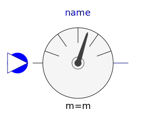
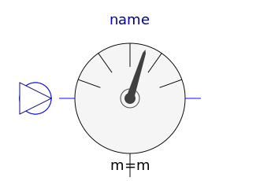
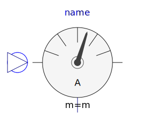
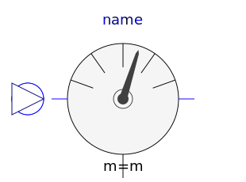
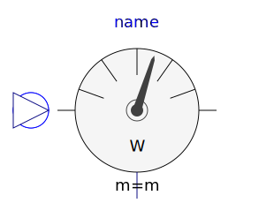

This package contains multiphase potential, voltage, and current sensors.
| Name | Description |
|---|---|
|  PotentialSensor | Multiphase potential sensor |
| VoltageSensor | Multiphase voltage sensor |
|  VoltageQuasiRMSSensor | Continuous quasi voltage RMS sensor for multi phase system |
|  CurrentSensor | Multiphase current sensor |
|  CurrentQuasiRMSSensor | Continuous quasi current RMS sensor for multi phase system |
| Multiphase instantaneous power sensor | |
| Multiphase sensor to measure current, voltage and power | |
|  AronSensor | threephase Aron sensor for active power |
| ReactivePowerSensor | threephase sensor for reactive power |